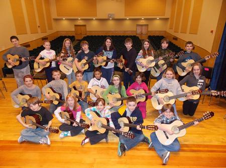
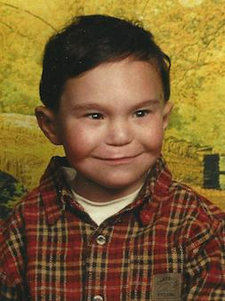

Gilmore & Meadow Elementary Schools
North Tonawanda
To purchase musical instruments for use by students.In Memory of Ryan A. Bertini, 1997-2005
Supporting the Visual and Performing Arts in Education
A 501(c)(3) not-for-profit corporation and NYS registered public charity helping young students experience art, music, theater, and creative learning throughout Western New York.


Mission
The primary mission of The Remember Ryan Foundation Inc. is to financially support efforts to expand visual and performing arts exploratory and experiential opportunities for young students through The Remember Ryan Grants Fund and other funding initiatives.
The foundation has helped school communities bring music, theater, visual art, performances, creative equipment, and shared student experiences into classrooms across the region.
Schools served
Remember Ryan Grants Fund
Remember Ryan Grants support visual and performing arts projects for young students. The program is now open to K-8 schools in all Western New York counties.
Previous grants
North Tonawanda
To purchase musical instruments for use by students.Town of Tonawanda
To fund the school musical.Western New York
To conduct a summer dance program.Buffalo
To update stage sound and lighting equipment.North Tonawanda
For a project designed to develop fine motor control through painting.Western New York
For a visual arts project.Starpoint
To purchase African drums for school band ensemble.Town of Tonawanda
For performing arts.North Tonawanda
To buy classroom music supplies.Application outline
Include the project title, primary contact, other staff involved, grade levels, number of students, and duration.
Briefly describe how the project relates to the visual or performing arts.
Explain how the project may enhance appreciation of the arts for the students involved.
Include vendors, avoid items covered by state aid or regular school budgets, and note whether partial funding is acceptable.
Describe how results will be shared with the school and community through publicity, performance, or another format.
Upon completion, provide a tangible example such as artwork, video, scrapbook, or other appropriate item.
Email-only applications
Download the application template, complete it, and send your request to contact@RememberRyanFoundation.org. Applications are not submitted through an online form on this website.
Direct Gifts and Corporate Sponsorships
What began as a regular Remember Ryan Grant evolved into the foundation's first Direct Gifts Grant, supporting musical instruments for students who might not otherwise have the opportunity to participate.
Direct Gifts have also supported school visual arts departments with items such as a 35mm camera, artwork display racks, and a laser photo printer. School-based corporate sponsorships are reserved for annual visual or performing arts activities involving large numbers of students across multiple grade levels.
Traditional Direct Gifts provide up to $100 toward visual or performing arts reference materials for a school's Library Media Center.
Ryan's Garden
The Ryan A. Bertini Memorial Meditation Garden is located within the Adam Gondek Memorial Botanical Gardens on the historic Erie Canal in North Tonawanda, NY.
Scrapbook
A class set of ukuleles purchased through a Remember Ryan Grant for Starpoint Central Schools.
Students at Meadow School in North Tonawanda enjoying ukuleles provided through a Remember Ryan Grant.
Norm Alexander, a 1999 NTHS Visual and Performing Arts Wall of Fame inductee, was honored as both a graduate and staff member.
The historic Riviera Theater was the venue for the annual Remember Ryan Recital in 2015 and 2016.
The Remember Ryan Foundation and the Larry Lakeman Memorial Fund partnered for three successful Summerfest fundraisers.
Ryan's Runners
Ryan's Runners began as a community team honoring Ryan's memory and supporting the foundation's work. The original team formed in 2012 and helped bring friends, family, and supporters together around Ryan's legacy.
Donations are appreciated
Use PayPal or a credit/debit card online, or mail a check to the foundation.